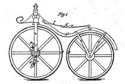

|
History of bicycle steer and dynamics equations |
 |
|
|
Delft University of Technology |
This partial survey, of analyses and simulations of rigid-body models of bicycles and motorcycles, had its genesis in the M.Sc. thesis of Hand (1988). Included are several papers which do not contain comparable equations, but which are well known as related to bicycle dynamics. Note that, from distant past to present, much of the key literature has not been peer-reviewed.
Most motorcycle models include tire compliance, which permits precise comparison with rigid-wheel models only if the tire stiffness can be made infinite. So we have largely neglected the motorcycle literature.
Papers marked with a * have equations at least nearly as general as ours and also have equations which we either have verified as at least close to correct or which we believe are likely to be close to correct. Papers marked with a ** are at least as general as ours and we are confident that they agree with ours exactly (but for minor typographical errors).
Although surely there are gaps to be filled and corrections to be made, this survey is more complete than anything available in the open literature.
- 1869
- Rankine (famed civil engineer and thermodynamics theorist) presents fundamental, semi-quantitative observations on leaning and steering of Velocipedes (an early name for bicycles). Seemingly the vehicles he considers have vertical steering axes, straight forks, and pedals directly driving the front wheel. His exposition contains the earliest known description of 'countersteering' -- briefly turning left in order to enter a rightward curve.
- 1896
- Archibald Sharp's authoritative book on the design of bicycles and tricycles includes a calculation of the torque required to execute a steady turn on a bicycle. His model is much simplified and his calculation is slightly wrong. Most importantly for bicycle dynamics analysis, his assumption that steering must self-center in order to be self-stable is now known to be wrong.
- 1895
- Bourlet's book on bicycles is published. It is
criticized by Klein and Sommerfeld (1910). We did not check it.
Bourlet1895JPM.txt , Bourlet1899JMP.txt - 1898
- McCaw determines under what conditions a biycle can make a
steady turn with a zero steering torque. He considers a road with
superelevation, as in an in-door cycle track. One can argue that the paper considers a special case, nothing is said
about stability, and the calculation has an error, and Whipple (1899) did not
interpret the paper correctly.
McCaw1898JPM.txt
- 1898-1899
- G. R. RRouth, On
the motion of a bicycle.
Routh1898JPM.txt - 1899
- Bourlet, Étude
théorique sur la bicyclette.
Bourlet1899JPM.txt - 1899
- Boussinesq, four summaries
+ two papers.
Boussinesq1899JPM.txt - 1899**
- Meteorologist and mathematician Francis Whipple,
just after his graduation as second wrangler from Trinity College
(Cambridge), writes an "honourable mention" thesis and then paper
on bicycle dynamics. Whipple writes non-linear governing equations
which are nearly correct. A cosine
psi term is missing in the constraint
equation for the pitch angle, and this error propagates into the non-linear
equations of motion. Fortunately this has no influence on the linearized equations.
Therefore, he is the first to derive the correct linearized
equations for a bicycle. But for typographical errors,
his linearization agrees with our linearized equations. He
also considered the stabilization of the bicycle by steering torques and
body lean.
Whipple1899Hand88.pdf, Whipple1899JPM.txt - 1900-1901*
- Carvallo writes a 300 page prize-winning
monograph on the dynamics of monocycles and bicycles (a monocycle is
a single-wheeled vehicle where the rider sits inside the wheel). Carvallo's model is not quite as general as the model presented
here (see Hand 1988). When our model is simplified to correspond
to his, the equations agree exactly. Carvallo
and Whipple (1899) seem unaware of each other.
Carvallo1901Hand88.pdf, Carvallo1901JPM.txt, Carvallo1901JMPJPM2.txt, Carvallo1901MJC.txt, Carvallo1901_comp_coleman2.pdf - 1910
- Henri Bouasse uses
a much simplified model of a bicycle to show how a bicycle can be
balanced by steering. Therefore only the lean
equation is considered, with the steering input appearing as a forcing term
in the right-hand side. When so simplified our equations agree with these. The
spirit, although perhaps not the rigour, is much in the
line of more modern
control-theory-oriented work such as that of Getz & Marsden (1995).
Bouasse1910JPM.txt - 1910*
- Physicists Felix Klein & Arnold Sommerfeld write a
book about gyroscopes which includes a chapter on bicycles.
This chapter appears in part 4 which has been edited and completed by Fritz
Noether. The
model in this book is not as general as the model here, for
example the mass of the front frame is effectively limited to a line along the
steering axis.
After our model is simplified it agrees with theirs exactly (see
Hand 1988).
KleinSommerfeld1903Hand88.pdf, KleinSommerfeld1910JPM.txt, KleinSommerfeld1910JPM2.txt - 1915
- G. S. Bower, apparently unaware of all of the work
above, derives incorrect equations for a highly simplified bicycle
model (see Hand 1988).
Bower1915Hand88.pdf - 1920
- Richard Grammel has a
simplified bicycle model in his book on spinning tops (`Der Kreisel`) to
illustrate the gyroscopic effect. He takes into account two important effects
but forgets about the trail. We did not check.
Grammel1920JPM.txt - 1922
- R. H. Pearsall attempts to extend Bower's analysis
(1915) in order to explain "speedmans wobble" (which may
correspond to what we would now call shimmy). His model is highly
simplified and his equations for that model are not correct (see
Hand 1988).
Pearsall1922Hand88.pdf - 1934
- L. G. Loicjanskii & A. G. Lu\'re derive equations for a simplified bicycle. These are the basis for the model in Neimark & Fufaev (1972). We have not seen the work. The more general but incorrect equations in Neimark & Fufaev, when reduced to apply to this simpler model, give equations which agree with our equations when similarly simplified. Neimark & Fufaev presumably used this for checking their more general model, thus there is a good chance that the 1934 equations of the simplified model are correct.
- 1948
- Timoshenko and Young's dynamics text book use
the same model and assumptions as Bouasse (1910).
TimoshenkoYoung1948Hand88.pdf, TimoshenkoYoung1948JPM.txt - 1948
- J. P. Den Hartog's excellent textbook on dynamics includes a discussion (see article 61) of how a bicycle can be balance, with control, by steering the wheels to a position underneath the rider as he/she falls. Den Hartog also explains that the gyroscopic torque of the front wheel naturally accomplishes steer in the right direction even without rider input. This work is in the line of Grammel (1920). There are no detailed equations of any bicycle model.
- 1949
- B. D. Herfkens writes a report (in Dutch) on the
stability of a bicycle. This is one of 13 reports of the Dutch Bicycle
Research Institute (in Dutch: Instituut voor Rijwielontwikkeling) written
between 1948 and 1952. He derives linearized equations of motion for the
Whipple model by a Lagrange method with nonholonomic constraints. He gives
reference to Carvallo (1900) and Whipple (1899) but makes no comparison. He
addresses the question of design changes and the effect on the weave speed.
He makes a graph showing the effect of changes in the front wheel inertia on
the stable forward speed range. This is an intelligent report and we
suspect, by first impression, that his equations are correct.
Herfkens1949JPM.txt - 1953-1955**
- E. Döhring, University of Technology Braunschweig, Germany,
writes a PhD thesis on the
stability of a straight ahead running motorcycle. He builds on the
model by Klein & Sommerfeld (1901) and ends up with the same
model as presented here. His 1955 paper is
translated by Lotsof at Calspan into English: these
equations agree with ours in detail and are correct.
Döhring also did experiments on a motor-scooter and two different motorcycles to
validate his results. Some of these results are reported in his 1954 paper.
Doehring1953JPM.txt - Doehring1955Hand88.pdf, Doehring1955JPM.txt
- 1963
- R. N. Collins' University of Wisconsin PhD thesis,
sponsored by Harley Davidson, considers a model of a motorcycle
that is equivalent to the model here with the addition of drive
and drag forces. He writes non-linear differential equations and
then linearizes. There appears to be a small error but the form
of the equations also seems generally correct. The equations were
deemed too complicated in form to check in detail (see Hand 1988).
Collins1963Hand88.pdf - 1964
- D. V. Singh, at Wisconsin with Collins (1963) adds a
tire slip to Collins model. However the Collins and Singh
equations seem to be mutually incompatible. And neither of them
compare their equations with previous equations (see Hand 1988).
Singh1964Hand88.pdf - 1967*
- Neimark & Fufaev authoritative monograph
on non-holonomic
dynamics (translated in 1972) has a chapter on the
equations for a bicycle. The model is based on Loicjanskii
& Lu're (1937). The formulation
by Neimark & Fufaev
seems correct, and is imitated in Hand's thesis
(1988). However there are various errors (missing terms, calculation errors,
typographical errors) so that the final equations are incorrect.
The main error is the
lacking of second order contribution of steer
angle to pitch of rear frame, leading to the error in energy, which of
course makes the Lagrangian incorrect.
Although they mention that their equations have the same general
form as those of Döhring (1955) they
did not check for detailed agreement (see Hand 1988).
NeimarkFufaev1967Hand88.pdf - 1970
- Chemist D. E. H. Jones writes a popular-style, casual and widely remembered article about his attempt to build an unrideable (no-hands) bicycle. Jones gives up on dynamics equations and attempts an empirical understanding. He discovers that positive trail and angular momentum of the front wheel are both critical for riderless stability; while trail has a greater effect on making no-hands riding impossible.
- 1970
- Commissioned by the National Commission on Product Safety, R. S. Rice and R. D. Roland write a report on the safe handling of a bicycle. The study involves experiments and an analytical model. They (Roland) derive equations of motion for a bicycle which includes radial and lateral tire stiffness and a lateral leaning rider. They show no simulation results, apparently due to lack of time and funding. We did not check the equations.
- 1971**
- D. V. Singh & V. K. Goel use Döhring's (1955)
correct model to analyze the stability of a motor-scooter
and thus most likely have correct equations (see Hand 1988).
SinghGoel1971Hand88.pdf - 1971*
- R. S. Sharp considers a model that is slightly less
general (mass moment of inertia of front assembly parallel to
steering axis) than the model here but which has tire compliance.
He is the first to label the two major rigid eigenmodes
as weave and capsize mode. His nonlinear model is incorrect, he treats
rear-frame pitch as zero, with a constant force acting upward on the front
wheel. When
he linearizes his non-linear model and takes the limit of infinite
tire stiffness he introduces several algebraic and typographical
errors. After correcting for these errors his model agrees
with ours (see Hand 1988).
Sharp1971Hand88.pdf - 1971-1972
- In the only known study financed by a bicycle company
(Schwinn), Roland & Massing (1971)
and Roland & Lynch (1972) derive non-linear
equations for a bicycle with radial and lateral tire deformation. The equations
of motion contains several algebraic and typographical errors. The side-slip
angle of the front wheel does not contain the steering rate angle and leads
to discrepancies. Therefore, after linearizing and taking the
non-slip limit we were unable to make agreement with our equations
(see Hand 1988). The same bicycle model is
presented in Roland (1973).
Roland1971Hand88.pdf, RolandMassing1971JPM.txt, Roland1973JPM.txt - 1972**
- D. H. Weir's UCLA motorcycle PhD thesis makes bicycle
dynamics history by being the first researcher to explicitly
compare his equations, in detail, with previous research. Weir's
equations, when slightly simplified to apply to Sharp's (1971)
simpler model, agrees with Sharp's equations. When, instead,
Weir's model is left more general with regard to inertial
properties, but side-slip is eliminated, his equations agree with
our equations (see Hand 1988).
Weir1972Hand88.pdf, Weir1972JPM.txt - 1973
- D. J. Eaton's Michigan PhD thesis concerns vehicle-rider interactions. We have not checked his governing differential equations.
- 1975
- Singh & Goel derive equations for a more general model than they used in 1971. They do not mention checking if their new equations reduce to their previous (Döhring's) equations and we did not attempt this check either (see Hand 1988).
- 1975
- P. J. Van Zytveld's PhD
thesis at Stanford includes
equations for a bicycle with a rider as a fifth rigid body.
If the rider is removed, his equations agree with ours.
Van Zytveld was advised by John Breakwell who
(private communication - Andreas von Flotow) is said to have had
an independent derivation (see Breakwell 1982) that agreed with
Van Zytveld.
VanZytveld1975JPM.txt - 1975*
- R. S. Sharp & C. J. Jones extended Sharp's 1971
model to include a different tire model. When we removed the tire
deformation the equations agree with a simplified version of our
model (see Hand 1988).
SharpJones1975Hand88.pdf - 1978
- Weir & Zellner present in an appendix the same
derivation as Weir (1972) but unfortunately
introduce a number of typographical errors. Weir's dissertation (1972) is the
more authoritative work (see Hand 1988).
WeirZellner1978Hand88.pdf - 1978
- L. G. Lobas (in the
translated work his name gets misspelled into Gobas) presents
equations for a model like ours, including the possibility of forward
acceleration. He uses the "Boltzmann-Hamel"
equations in the derivation but the final equations do not agree with
ours and thus seem to be incorrect (see Hand 1988).
Lobas1978Hand88.pdf - 1979
- C. Adiele writes a Master of Engineering thesis in
which he uses Kane's equations to derive equations of motion that
do not agree with our equations (see Hand 1988).
Adiele1979Hand88.pdf - 1979*
- Mark Psiaki, now a Professor of Mechanical
Engineering at Cornell, writes a Princeton Physics honor's thesis
on the dynamics of a bicycle, writing full non-linear equations.
We have compared the eigenvalues in a forward speed range
for the example from his thesis with our model and the results agree within
plotting accuracy. Recently Psiaki ( private communication) compared
his results with those of
Hand 1988 and also found agreement to within plotting accuracy. So Psiaki's equations show signs of being correct.
Psiaki1979JPM.txt - 1982
- Lowell & McKell write equations for a highly
simplified model of a bicycle. When our equations are simplified
to correspond to their model, the equations do not agree. Very specialist model, point masses and no front mass,
vertical axis and it is incorrect.
LowellMcKell1982Hand88.pdf - 1982
- John V. Breakwell, the advisor of Van Zytveld (1975) gives a talk about bicycles. This talk, or a one presumably like it, is mentioned in the Breakwell memorial biography by Arthur Bryson. We have not seen any notes of any kind from Breakwell or his talks.
- 1983
- C. Koenen, advised by Hans Pacejka, writes a Delft PhD thesis on motorcycle dynamics. He investigates the stability of motorcycles, running straight ahead and in steady state cornering. His model includes tires, rear and front wheel suspension and a passive hinged rider. He puts extra effort in visualizing the eigenmodes. We have not checked his equations.
- 1985
- Robin Sharp writes a review paper on the lateral dynamics of single track
vehicles.
SharpReviewsJPM.txt - 1987
- Arnold Schoonwinkel writes a PhD thesis at Stanford on the design and test of a computer stabilized unicycle.
- 1987
- Jim Papadopoulos presents various results concerning the dynamics of bicycles. The present publication is the first to move some contents of his notes from the grey to the peer-reviewed literature. The compact derivation of linearized equations presented here is from Papadopoulos (1987).
- 1988
- Scott Hand's Master thesis, advised by Papadopoulos and Ruina, presents equations of motion that are checked against the literature. The Hand derivation follows the approach of Neimark and Fufaev (1972) but corrects errors therein. Hand's equations agree with Papadopoulos (1987), Döhring (1955), Weir (1972) and, when simplified, with Whipple (1899). Hand was unaware of Van Zytveld (1975), and Breakwell (1982). Hand's FORTRAN program for calculating stability eigenvalues has errors and the eigenvalue calculations in Hand's thesis should not be trusted.
- 1988**
- B. C. Mears, R. E. Klein's PhD student at Urbana Champaign, confirms the correctness of the Papadopoulos (1987) and Hand (1988) equations.
- 1990*
- In a substantial bicycle research program at
Oldenburg, G. Franke, W. Suhr & F. Riess derive non-linear
equations of a bicycle. We did not check the derivation in detail.
The authors were unable to find agreement between integration of
their differential equations for small angles and the integration
of the Hand equations (private communication to JP from the
authors). Recent comparison of the linearized stability on
the benchmark bicycle showed agreement of the eigenvalues within plotting
accuracy. This paper was the topic of an entertaining lead editorial in
Nature by John Maddox (1990).
FrankeSuhrRiess1990JPM.txt, FrankeSuhrRiess1990JMP.txt - 1995
- The non-linear dynamics group at Caltech, including Jerry Marsden and colleagues, writes the first of several papers on bicycle control. Because the emphasis is on control, not passive-dynamics, highly simplified models are used. We have not checked any of these in detail.
- 2001
- Sharp and Limebeer derive the equations of motion for a
motorcycle by means of the multibody dynamics software AutoSim. The model is
based on Koenen (1983), but the results did not agree.
SharpLimebeer2001JPM.txt - 2002
- Cossalter and Lot derive the equations of motion for
a motorcycle for real time simulations based on the natural coordinate
approach. The equations are formulated as a large system of
Differential-Algebraic Equations (DAEs). We have not checked it.
CossalterLot2002JPM.txt - 2004
- In a chapter of David Wilson's popular book Bicycling Science, Papadopoulos presents various issues related to bicycle steering and balance. This discussion includes an informal introduction to the equations here.
- 2005**
- J. P. Meijaard in preparing for this publication, makes an independent derivation of the linearized equations of motion.
- 2005**
- Schwab, Meijaard and Papadopoulos write a draft of the present paper and present it at a meeting. The paper here completely subsumes that conference paper.
- 2005
- K. J. Åström, R. E. Klein & A. Lennartsson present an inspiring 3 part paper on bicycle dynamics. The experimental work of Klein and students, much in the spirit of Jones (1970), extends back to the mid 1980s and is interestingly documented well here for the first time. Lennartsson presents simulations from a general purpose rigid-body dynamics code and gets agreement with the equations here, although not with enough accuracy presented to be totally assured of correctness. The theoretical work and bibliography in the paper is largely based on Papadopoulos (1987), Hand (1988) and related documents. The equations used to describe the simplified model (in turn used to intuitively explain bicycle stability) do not agree with the equations later used in the paper nor with the equations here. And, opposite to what is written in the paper, that model is not self-stable.
References
-
[If you know the whereabouts of any of these authors or copyright holders, please let us know.]
-
Adiele, C. 1979 Two wheeled vehicle design. M.Eng. thesis, Sibley School of Mechanical and Aerospace Engineering, Cornell University.
-
Appell, P.E. 1896 Mecanique Rationnelle, Vol. II, pp.297-302, 6th edn. Paris: Gauthier-Villars.
-
Åström, K.J., Klein, R.E. & Lennartsson, A. 2005 Bicycle dynamics and control: Adapted bicycles for education and research. IEEE Control Systems Magazine 25(4), 26-47.
-
Besseling, J. F. 1964 The complete analogy between the matrix equations and the continuous field equations of structural analysis. In International symposium on analogue and digital techniques applied to aeronautics: Proceedings, Presses Académiques Européennes, Bruxelles, pp. 223-242.
-
Bouasse, H. 1910 Cours de Mechanique, part 2, pp. 620-623. Paris: Ch. Delagrave. (Bou1910pp620-623.pdf)
-
Bourlet, C. 1899 Étude théorique sur la bicyclette. Bulletin de la Société Mathématique de France, 27 (1899), p. 47-67 (Bourlet1899pp47-67.pdf)
-
Bourlet, C. 1899 Étude théorique sur la bicyclette. Bulletin de la Société Mathématique de France, 27 (1899), p. 76-96 (Bourlet1899pp76-96.pdf)
-
Bourlet, C. 1904 Les bicyclettes a retropedalage, Le Genie Civil, 1904, Vol? pp.126-120, pp.141-145.(Bourlet1904.pdf)
-
Valentine Joseph Boussinesq, 1899, "Apercu sur la thèorie de la bicyclette", Journal de Mathèmatique Pures et appliquèes, Tome Cinquième, pp 117-135. (pdf)
-
Valentine Joseph Boussinesq, 1899, ``Complèment à une ètude rècente concernant la thèorie de la bicyclette (1): influence, sur l'èquilibre, des mouvements latèraux spontanès du cavalier ", Journal de Mathèmatique Pures et appliquèes, Tome Cinquième, pp 217-232. (pdf)
-
Valentine Joseph Boussinesq, 1899, "De l'effet produit, sur le mouvement d'inclinaison d'une bicylette en marche, par les dèplacements latèraux que s'imprime le cavalier.", Journal de Mathèmatique Pures et appliquèes, Tome Cinquième, CR, vol 128, pp 766-781. (pdf), and another (859-862), one more (art 11) and still another (art 21).
-
Bower, G. S. 1915 Steering and stability of single-track vehicles. The Automobile Engineer V, 280-283.
- Breakwell, J. V. 1982 (April 12) Riding a bicycle without hands: The stability of a bicycle. Lecture series at Sonoma State University called "What Physicists Do".
-
Carvallo, M. E. 1900 Théorie du mouvement du Monocycle et de la Bicyclette. Journal de L'Ecole Polytechnique, Series 2, Part 1, Volume 5, "Cerceau et Monocyle", 1900, pp. 119-188, Part 2, Volume 6, "Théorie de la Bicyclette", 1901, pp. 1-118.(Carvallo1900.pdf)
-
Collins, R. N. 1963 A mathematical analysis of the stability of two-wheeled vehicles. Ph.D. thesis, Dept. of Mechanical Engineering, University of Wisconsin.[Posted without permission](CollinsRobert1963.pdf)
-
Cossalter, V. & Lot, R. 2002 A motorcycle multi-body model for real time simulations based on the natural coordinate approach. Vehicle System Dynamics 37(6), 423-447.
-
Davis, J. A. 1975 Bicycle tire testing – effects of inflation pressure & low coefficient surfaces, Cornell Aero. Lab. Report no. ZN-5431-V-3
-
Davis, J. A. & R. J. Cassidy 1974 The Effect of Frame Properties on Bicycling Efficiency, Cornell Aero. Lab. Report no. ZN-5431-V-2
-
Den Hartog, J. P. 1948 Mechanics, article 61. New York and London: McGraw-Hill.
-
Dikarev, Dikarev and Fufaev, 1981, A correction of the equations in Niemark and Fufaev.(pdf)
-
Döhring, E. 1953 . Über die Stabilität und die Lenkkräfte von Einspurfahrzeugen. Ph.D. thesis, Technical University Braunschweig, Germany.
-
Döhring, E. 1954 Die Stabilität von Einspurfahrzeugen. Automobil Technische Zeitschrift 56(3), 68-72. (Doh54.pdf)
-
Döhring, E. 1955 Stability of single-track vehicles, (Transl. by J. Lotsof, March 1957 Die Stabilität von Einspurfahrzeugen. Forschung Ing.-Wes. 21(2), 50-62 (Doh55a.pdf) ) [Posted without permission](Dohring.pdf)
[Posted here with the assumed courtesy (without permission) of CALSPAN.] -
Eaton, D. J. 1973 Man-machine dynamics in the stabilization of single-track vehicles. Ph.D. thesis, University of Michigan.[Posted without permission](EatonDavid1973.pdf)
-
Franke, G., Suhr, W. & Riess, F. 1990 An advanced model of bicycle dynamics. Eur. J. Physics. 11(2), 116-121. (FraSuhRie90.pdf)
-
Getz, N. H. & Marsden, J. E. 1995 Control for an autonomous bicycle In IEEE Conference on Robotics and Automation. 21-27 May 1995, Nagoya, Japan.
-
Grammel, R. 1920 Der Kreisel, ch. 15, pp. 183-186. Braunschwieg: Vieweg & Sohn. (Gra1920pp183-186.pdf)
-
Grammel, R. 1950 Der Kreisel, Vol 2, ch. 3, pp. 53-57. Berlin: Springer Verlag. (Gra1950pp53-57.pdf)
-
Herfkens, B. D. 1949 De stabiliteit van het rijwiel, (In Dutch, The stability of the bicycle.)
Report S-98-247-50-10-’49, Instituut voor rijwielontwikkeling, Delft, The Netherlands.(Herfkens1949.pdf) -
Herlihy, D. V. 2004 Bicycle: The history, New Haven, CT: Yale University Press.
-
Hand, R. S. 1988 Comparisons and stability analysis of linearized equations of motion for a basic bicycle model. M.Sc. thesis, Cornell University. (Han88.pdf)
-
Jones, D. E. H. 1970 The Stability of the bicycle. Physics Today 23(3), 34-40.
-
Jonker, J. B. 1988 A finite element dynamic analysis of flexible spatial mechanisms and manipulators. Ph.D. thesis, Delft University of Technology, Delft.
-
Jonker, J. B. & Meijaard, J. P. 1990 SPACAR-Computer program for dynamic analysis of flexible spatial mechanisms and manipulators. In Multibody Systems Handbook (ed. W. Schiehlen). Berlin: Springer-Verlag, pp. 123-143.
-
Kane, T. R. 1968 Dynamics. New York: Holt, Rinehart and Winston.
-
Kane, T. R. 1975 Fundamental kinematic relationships for single-track vehicles. International Journal for Mechanical Sciences 17, 499-504.
-
Klein, F. & Sommerfeld, A. 1910 Über die Theorie des Kreisels, Ch. IX, Section 8, Stabilität des Fahrrads, pp. 863-884. Leipzig: Teubner.(KleiSom1910V4pp863-884.pdf) Here is an English translation arranged by Jim Papadopoulos (PDF).
-
Koenen, C. 1983 The dynamics behaviour of a motorcycle when running straight ahead and when cornering. Ph.D. thesis, Delft University of Technology, Delft.
-
Kunkel, D. T. 1975 Simulation Study of Motorcycle Response to Pavement Grooving, Cornell Aero. Lab. Report no. ZN-5740-V-1.
-
Kunkel, D. T. 1976 Bicycle dynamics – simulated bicycle / rider system performance in a turning maneuver, Cornell Aero. Lab. Report no. ZN-5921-V-1
-
Kunkel, D. T. & R. S. Rice 1975 Low speed wobble study of the Harley Davidson Electra Glide FLH-1200 motorcycle, Cornell Aero. Lab. Report no. ZN-5473-V-1
-
Kunkel, D. T. & Roland, R. D. 1973 A comparative evaluation of the Schwinn Continental and Continental-based Sprint bicycles, Cornell Aero. Lab. Report no. ZN-5361-K,
-
Lobas, L. G. 1978 Controlled and programmed motion of a bicycle on a plane. Mechanics of solids 13(6), 18. (Transl. by Allerton Press [authors name misspelled into G[sic]obas], Cited in translation as Izv. AN SSSR. "Mekhanika Tverdogo Tela," Vol. 13, No. 6, pp. 22-28, 1978.(Lob78a.pdf))(Lob78b.pdf)
-
Loicjanskii, L. G. & Lu're, A. G. 1934 Course of Theoretical Mechanics, Vol. 3, ONTI, Moscow, 1934; Vol. 2, 5th edn., GITTL, Moscow, 1955.
-
Lowell, J & McKell, H. D. 1982 The stability of bicycles. American Journal of Physics 50(12), 1106-1112.
-
Maddox, J. 1990 Bicycling about to be explained? Nature 346, 2 Aug 1990, pp. 407. (Mad90.pdf)
McCaw, G. T. 1898 On the steering of the bicycle. The Engineer, Dec 9, pp. 557.(McCaw1898.pdf)
Mears, B. C. 1988 Open loop aspects of two wheeled vehicle stability characteristics. Ph.D. thesis, University of Illinois at Urbana-Champaign, IL. -
Meijaard, J. P. 1991 Direct determination of periodic solutions of the dynamical equations of flexible mechanisms and manipulators. International Journal for Numerical Methods in Engineering 32, 1691-1710.
-
Meijaard, J. P. 2004 Derivation of the linearized equations for an uncontrolled bicycle. Internal report University of Nottingham, UK. (Mei04b.pdf)
-
Neimark, Ju. I. & Fufaev, N. A. 1972 Dynamics of Nonholonomic Systems. Providence, RI: A.M.S. (Transl. from the Russian edition, Nauka, Moscow, 1967.)
-
Papadopoulos, J. M. 1987 Bicycle steering dynamics and self-stability: A summary report on work in progress. Technical report, Cornell Bicycle Research Project, Cornell University, pp. 1-23.
(availabe with other related reports at: http://ruina.tam.cornell.edu/research/). -
Pearsall, R. H. 1922 The stability of a bicycle. The Institution of Automobile Engineers, Proceeding Session 1922-23 Part I, Vol. XVII, p 395-404.
-
Psiaki, M. L. 1979 Bicycle stability: A mathematical and numerical analysis. Undergradute thesis, Physics Dept., Princeton University, NJ.
-
Rankine, W. J. M. 1869 On the dynamical principles of the motion of velocipedes. The Engineer 28, pp. 79, 129, 153, 175. (Ran1869pp79.pdf, Ran1869pp129.pdf, Ran1869pp153.pdf, Ran1869pp175.pdf, Ran1870pp2.pdf)
-
Rice, R. S. 1974 Bicycle dynamics – simplified steady state response characteristics and stability indices, Cornell Aero. Lab. Report no. ZN-5431-V-1
-
Rice, R. S. 1975 Accident avoidance capabilities of motorcycles. In Proceedings International Motorcycle Safety Conference, Dec 16 & 17 , 1975 USDOT, National Highway Traffic Safety Administration, Washington, DC, pp. 121-134
-
Rice, R. S. (?) 1976 Bicycle dynamics – simplified dynamic stability analysis, Cornell Aero. Lab. Report no. ZN-5921-V-2
-
Rice, R. S. 1978 Rider skill influences on motorcycle maneuvering. SAE paper 780312, SAE-SP 428.
-
Rice, R. S., Davis, J. A. & Kunkel, D. T. 1975 : Accident avoidance capabilities of motorcycles, Cornell Aero. Lab. Report no. ZN-5571-V-1 and ZN-5571-V-2
-
Rice, R. S. & Kunkel, D. T. 1976 Accident Avoidance Capabilities of Motorcycles - Lane Change Maneuver Simulation and Full-Scale Tests, Cornell Aero. Lab. Report no. ZN-5899-V-1
-
Rice, R. S. & Roland, R. D. 1970 An evaluation of the performance and handling qualities of bicycles. Cornell Aero. Lab. Report no. VJ-2888-K.(RicRol70.pdf)
-
Rice, R. S. & Roland, R. D. 1972 An evaluation of the safety performance of tricycles and minibikes, Cornell Aero. Lab. Report no. ZN-5144-K-1.
-
Roland, R. D. 1973 Computer simulation of bicycle dynamics. Mechanics and Sport 4, ASME, pp. 35-83.
-
Roland, R. D. 1973 Simulation study of motorcycle stability at high speed, SAE paper 73020, Proc. Second International Congress on Automotive Safety, July 16-18, San Francisco.
-
Roland, R. D. 1974 Performance Tests of Harley-Davidson Electra Glide FLH-1200 Motorcycle Tires, Cornell Aero. Lab. Report no. ZN-5438-V-1
-
Roland, R. D. & Massing, D. E. 1971 A digital computer simulation of bicycle dynamics. Cornell Aero. Lab. Report no. YA-3063-K-1.
-
Roland, R. D. & Lynch, J. P. 1972 Bicycle dynamics tire characteristics and rider modeling. Cornell Aero. Lab. Report no. YA-3063-K-2.
-
Roland, R. D. & Rice, R. S. 1973 Bicycle dynamics – rider guidance modeling and disturbance response. Cornell Aero. Lab. Report no. ZS-5157-K-1
-
Roland, R. D. & Kunkel, D. T. 1973 Motorcycle dynamics, the effects of design on high speed weave, Cornell Aero. Lab. Report no. ZN-5259-K-1
-
G.R.R. Routh, 1899, "On the Motion of a Bicycle", The Messenger of Mathematics, Vol 28 (May 1898-April 1899), pp 151-169. (pdf) (Note G.R.R. Routh is the son of the famous E.J. Routh and grandson of Airy.).
-
Society of Automotive Engineers 2001 Vehicle dynamics Terminology-SAE J670e. 2001 SAE Handbook, SAE international, Warrendale, PA.
-
Sayers, M. W. 1991a Symbolic computer language for multibody systems. Journal of Guidance, Control, and Dynamics 14, 1153-1163.
-
Sayers, M. W. 1991b Symbolic vector/dyadic multibody formalism for tree-topology systems. Journal of Guidance, Control, and Dynamics 14, 1240-1250.
-
Schoonwinkel, A. 1987 Design and test of a computer stabilized unicycle. PhD thesis, Dept. of Aeronautics and Astronautics, Stanford University, CA. (Schoonwinkel1987.pdf)
-
Schwab, A. L. 2002 Dynamics of flexible multibody systems. Ph.D. thesis, Delft University of Technology, Delft.
-
Schwab, A. L. & Meijaard, J. P. 1999a The belt, gear, bearing and hinge as special finite elements for kinematic and dynamic analysis of mechanisms and machines. In Proceedings of the Tenth World Congress on the Theory of Machines and Mechanisms, IFToMM, June 20-24, 1999, Oulu, Finland (ed. T. Leinonen), Oulu University Press, Vol 4, pp. 1375-1386.
-
Schwab, A. L. & Meijaard, J. P. 1999b Dynamics of flexible multibody systems having rolling contact: Application of the wheel element to the dynamics of road vehicles. Vehicle System Dynamics Supplement 33, 338-349.
-
Schwab, A. L. & Meijaard, J. P. 2003 Dynamics of flexible multibody systems with non-holonomic constraints: A finite element approach. Multibody System Dynamics 10, 107-123.
-
Schwab, A. L., Meijaard, J. P. & Papadopoulos, J. M. 2005 Benchmark results on the linearized equations of motion of an uncontrolled bicycle. KSME International Journal of Mechanical Science and Technology 19(1), 292-304.
-
Sharp, R. S. 1971 The stability and control of motorcycles. Journal of Mechanical Engineering Science 13(5), 316-329.
-
Sharp, R. S. & Jones, C. J. 1977 The straight-running stability of single track vehicles. In Proceedings of the 5th VSD, 2nd IUTAM Symposium, Vienna, Austria, Sept. 19-23, pp. 334-342.
-
Sharp, R. S. 1985 The lateral dynamics of motorcycles and bicycles. Vehicle System Dynamics 14, 265-283. (Sha85.pdf)
-
Sharp, R. S. & Limebeer, D. J. N. 2001 A motorcycle model for stability and control analysis. Multibody System Dynamics 6, 123-142.
-
Singh, D. V. 1964 Advanced concepts of the stability of two-wheeled vehicle-application of mathematical analysis to actual vehicles. Ph.D. Thesis, Dept. of Mechanical Engineering, University of Wisconsin.[Posted without permission](SinghDigvijai1964.pdf)
-
Singh, D. V. & Goel, V. K. 1971 Stability of Rajdoot Scooter. SAE Paper no. 710273.
-
Singh, D. V. & Goel, V. K. 1975 Stability of single track vehicles. In Proceedings of IUTAM Symposium, Delft, the Netherlands, Aug 18-22.
-
Steele Jr, G. L. 1990 Common Lisp, The Language, 2nd edn., Digital Press, U.S.A.
-
Timoshenko, S. & Young, D. H. 1948 Advanced Dynamics. New York: McGraw-Hill.
-
Van Zytveld, P. J. 1975 A method for the automatic stabilization of an unmannned bicycle. M.Sc. thesis, Dept. of Aeronautics and Astronautics, Stanford University, CA. [Posted with permission from vanzytveldp@earthlink.net, +1 650-793-7012, +1-650-967-1163](vanZytveldPhD.pdf)
[Posted without permission from P. J. Van Zytveld. If you know his whereabouts please let us know.] -
Weir, D. H. 1972 Motorcycle handling dynamics and rider control and the effect of design configuration on response and performance. Ph.D. thesis, University of California, LA.[Posted without permission](WeirDavid1972.pdf)
-
Weir, D. H. & Zellner, J. W. 1978 Lateral-directional motorcycle dynamics and rider control. Technical report no. 780304, Society of Automotive Engineers, Warrendale, PA.
-
Whipple, F. J. W. 1899 The Stability of the Motion of a Bicycle. The Quarterly Journal of Pure and Applied Mathematics 30, 312-348. (Whipple.pdf).
-
Wilson, D. G. 2004 Bicycling science, 3rd edn. with contributions by Jim Papadopoulos. Cambridge, MA: MIT Press.
Updated Thursday, September 10, 2009 11:13 by Arend L. Schwab.